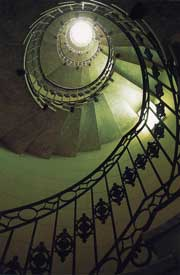
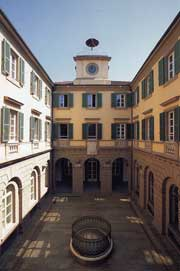

I Cortili a Torino

Fotolibro. Altri autori dei testi: E. Volterrani, F. Poli. Il cortile come luogo dell’abitare che include la natura (l’alto cielo), come luogo di sosta, di incontro, polmone fra il clamore della città e l’abitazione.
Contenuti: 120 fotografie
colore
Editore: Il Quadrante
Anno: 1991, 2^ediz.1992, terza ediz. 1999
